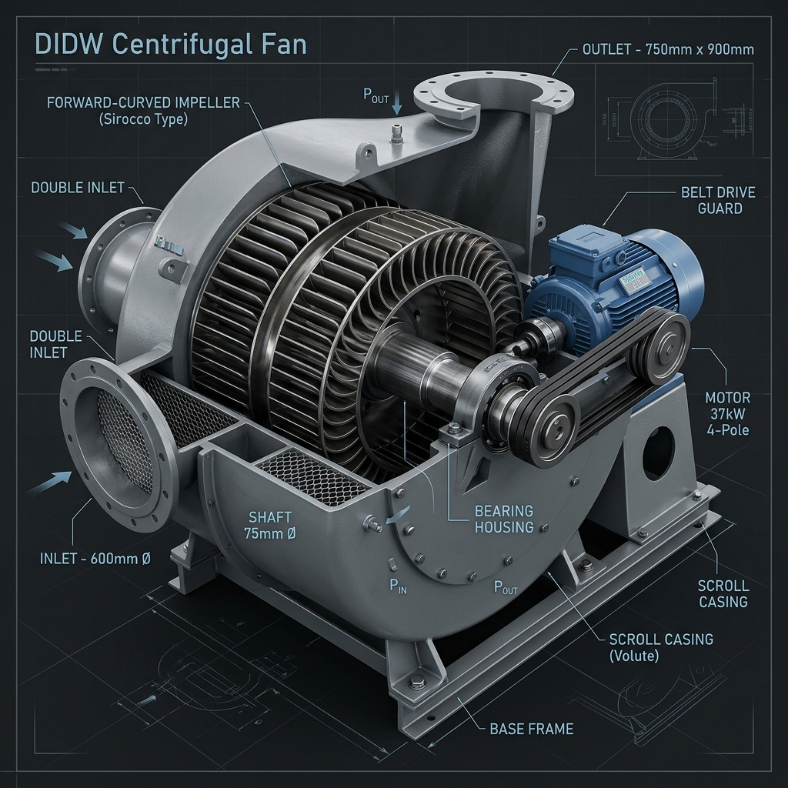

Diseño de Ventilador Centrífugo Tipo Sirocco
Presentación interactiva de ingeniería para el cálculo reproducible, modelado y predimensionamiento de un ventilador multialabe de doble ancho para aire limpio.

Parámetros de Entrada del Sistema
Punto de operación solicitado para el dimensionamiento de la turbomáquina.
Caudal de Diseño (Q)
3.0 m³/s
10,800 m³/h / 6,356 CFMPresión Estática (Δp_s)
90 mmH₂O
882.6 Pa / 3.54 inH₂ODensidad del Fluido (ρ)
1.20 kg/m³
Aire limpio a condiciones normalesJustificación de la Configuración Elegida
Se ha seleccionado un rodete de Doble Entrada (Double Inlet, Double Width - DIDW).
El caudal solicitado de 3.0 m³/s es considerablemente alto.
Si utilizáramos un ventilador de entrada simple (SISW) con un diámetro de ojo convencional, las velocidades axiales de entrada
alcanzarían valores prohibitivos, aumentando drásticamente las pérdidas por choque en los álabes y el ruido acústico.
La configuración de doble entrada divide el caudal de alimentación por la mitad en cada ojo de succión (1.5 m³/s por lado),
lo que permite mantener la velocidad axial de entrada en niveles de diseño óptimos (~7.77 m/s) y
garantiza una óptima entrada del flujo sin desprendimientos en los álabes.
Rotor y Alabeado Sirocco V1
Geometría y dimensiones seleccionadas para el rodete centrífugo multialabe.
Parámetros Geométricos Clave
Fundamentos del Rodete Sirocco
- Los ventiladores tipo Sirocco poseen un gran número de álabes de poca longitud radial, curvados fuertemente hacia adelante.
-
La relación de diámetros es muy alta (
D1/D2 = 0.85), dejando un amplio espacio interior para la entrada y distribución uniforme del caudal axial. - Esta tipología imparte una alta energía cinética al fluido (gran velocidad periférica $U_2$ y componente de arrastre $C_{u2}$), lo cual genera elevadas presiones en un tamaño compacto comparado con rotores de álabes hacia atrás.
-
Potencia al eje de cálculo:
4.86 kW, por lo que se prescribe la selección comercial estándar de un motor de 5.5 kW con transmisión de poleas a 1100 rpm.
Triángulos de Velocidades y Parámetros
Modifica los valores geométricos y de rotación en tiempo real para visualizar los vectores de velocidad a la salida del rodete.
Variables de Entrada
Triángulo de Velocidades de Salida
Voluta y Difusión Estática
Diseño de la carcasa espiral (caracol) para la conversión de energía cinética a presión.
Geometría de la Voluta V1
En los ventiladores Sirocco, el aire sale del rodete con una velocidad absoluta muy alta ($C_2 \approx 38.2\text{ m/s}$). Esto representa una fracción gigantesca de energía cinética, la cual debe convertirse eficientemente en presión estática dentro de la voluta antes de la descarga.
Importancia de la Lengua (Cut-off)
La lengua de la voluta se ubica a 48 mm del diámetro del rodete. Una holgura menor de la lengua incrementaría la eficiencia teórica, pero generaría una interacción aerodinámica severa y un ruido tonal de paso de álabes inaceptable.
El ancho interior de la voluta se selecciona en 280 mm, lo cual es ligeramente superior al rodete ($230\text{ mm}$) para acomodar holguras a los lados del rotor y evitar pérdidas secundarias por fricción de disco.
¿Por qué se seleccionaron 1100 RPM sobre 1500 RPM?
Comparativa técnica e impacto en la potencia e instalación del motor.
| Magnitud / Parámetro | Operación a 1100 RPM (Selección V1) | Operación a 1500 RPM (Tanteo Descartado) | Resultado / Conclusión |
|---|---|---|---|
| Velocidad Periférica ($U_2$) | 34.56 m/s | 47.12 m/s | Mayor esfuerzo centrífugo a 1500 RPM |
| Coeficiente de Presión | 0.616 (Presión estática ~90 mmH₂O) | 0.331 (Presión estática requerida 90 mmH₂O) | Desequilibrio en los coeficientes |
| Presión de Euler teórica ($\Delta p_E$) | 1555.5 Pa | 2892.4 Pa | Exceso innecesario de energía impartida |
| Potencia al Eje Estimada | 4.86 kW | 9.03 kW | Excede la capacidad del motor de 5.5 kW |
| Estado de Viabilidad | Viable (Motor 5.5 kW) | Inviable (Requiere >9 kW) | Selección de 1100 RPM óptima |
Conclusión del Grupo de Diseño: La velocidad de 1500 rpm del primer tanteo generaba un incremento de presión estática teórica excesivamente alto para lo requerido (desaprovechando energía). Al ajustar la rotación a 1100 rpm, los triángulos de velocidades se cierran con coeficientes estables y la potencia requerida se adapta cómodamente a la capacidad del motor comercial seleccionado de 5.5 kW con un margen de seguridad del 13.1%.
Explorador del Repositorio de Código
Navegación interactiva de la estructura de archivos en el repositorio de Aquiles-ryp360.
diseno-ventilador-sirocco
Rama: main-
00_gestion Archivos de planificación y gestión de tareas de diseño.cronograma_sirocco.pdfactas_reunion.md
-
04_bibliografia Información teórica y catálogos comerciales consultados.catalogo_ventiladores_sirocco.pdfdiseño_turbomaquinas_centrifugas.pdf
-
05_avances Informes de avance académico entregados periódicamente.primer_avance.mdsegundo_avance_voluta.md
-
06_calculos Memorias de cálculo técnicas de la turbomáquina (Vigente).memoria_calculo_sirocco_v1.md (Cerrado unidimensional)verificacion_resistencia_eje.md
-
07_planos Croquis y modelado CAD 3D preliminar del ventilador.rotor_sirocco_3d.stepvoluta_2d_casing.dxfensamble_didw.step
-
08_software Programas o códigos de cálculo matemático (Octave/Python).triangulo_velocidades_sirocco.pydimensionamiento_espiral.py
- .gitignore
- README.md